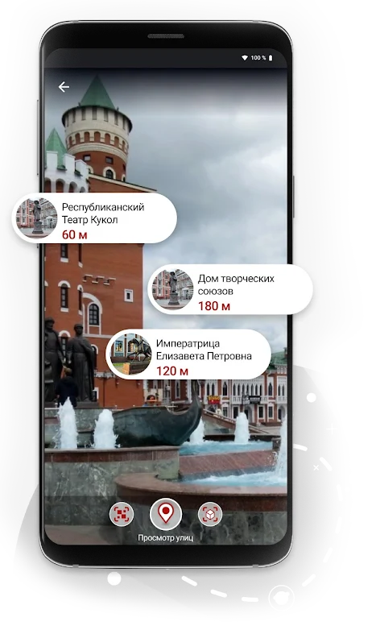
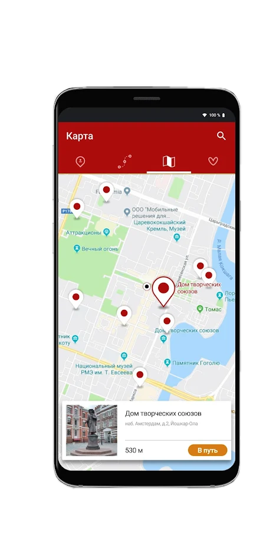

<section class="application">
  <div class="page__wrap">
    <svg class="icon figure figure--cross-with-triangle" width="341px" height="567px" fill="none">
      <use class="icon__symbol" xlink:href="#icon-figure-cross-with-triangle"></use>
    </svg>
    <div class="figure figure--triangle-big-gray"></div>
    <h2 class="application__title">Я здесь:<br>Марий Эл</h2>
    <div class="application__text">
      <p>Приложение «Я здесь. Марий Эл» - гид для гостей и жителей республики - создано с большой любовью. Ни один поисковый сервис не собирал информацию о культурных объектах заповедной Марий Эл с таким трепетом.</p>
      <p>Путешествуйте, не сидите дома! Приезжайте в Марий Эл. А если вы здесь живете, вам будет не менее интересно.</p>
      <a class="btn btn--main">Перейти в Google play</a>
    </div>
    <div class="application__img-wrap">
      <picture>
        <source type="image/webp" srcset="
            ../application/phone1-767@1x.webp 1x,
            ../application/phone1-767@2x.webp 2x,
            ../application/phone1-767@3x.webp 3x">
        <source type="image/jpeg" srcset="
            ../application/phone1-767@1x.png 1x,
            ../application/phone1-767@2x.png 2x,
            ../application/phone1-767@3x.png 3x">
        
      </picture>
      <picture>
        <source type="image/webp" srcset="
            ../application/phone2-767@1x.webp 1x,
            ../application/phone2-767@2x.webp 2x,
            ../application/phone2-767@3x.webp 3x">
        <source type="image/jpeg" srcset="
            ../application/phone2-767@1x.png 1x,
            ../application/phone2-767@2x.png 2x,
            ../application/phone2-767@3x.png 3x">
        
      </picture>
    </div>
  </div>
</section>
